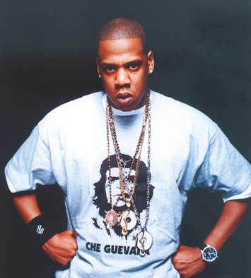

JAY Z

Jay Z é um dos rappers mais influentes e bem-sucedidos da história do hip hop. Com uma carreira que se estende por mais de duas décadas, ele lançou clássicos como Reasonable Doubt e The Blueprint. Além de sua música, Jay Z também se destacou como um empresário de sucesso, criando sua própria gravadora e investindo em diversos negócios.